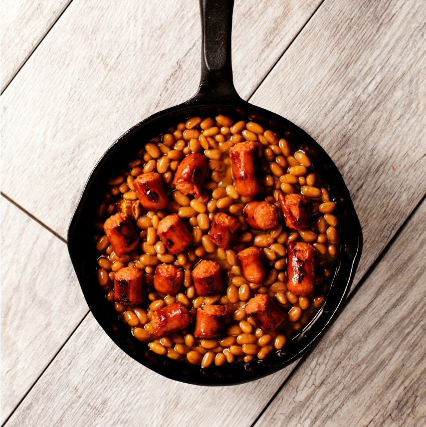

Franks & Beans

Description
Classic Franks and Bean Recipe with a kick!
Ingredients
- Nathan Hotdogs
- Baked Beans
- Franks Hot Sauce
Instructions
- Slice up hot dogs into little pieces
- Sear hot dogs in pan with a small amount of water or oil
- Combined cooked hot dogs with beans and simmer until warm
- Add Franks Hot Sauce for a special kick
Back to a Lazy Persons Guide to Dinner Recipes